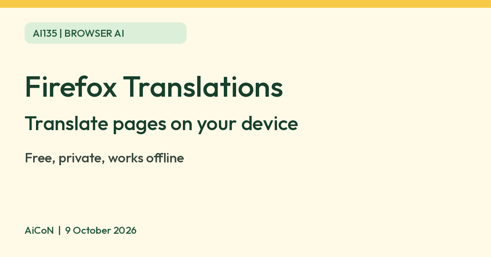

Firefox Translations: translate web pages on your device, free
Mozilla says Firefox has a built-in tool that translates web pages on your own device, so the text is not sent to cloud servers. Mozilla says Firefox is free.

What it is
Mozilla's support page says Firefox includes a built-in translation tool. Unlike some browsers, translations happen entirely on your device and your text is not sent to cloud servers. After the language packs are installed you can translate pages without an internet connection.
Is it free
Yes. Mozilla's Firefox FAQ says the Firefox browser is free, with no hidden costs. The translation feature is part of the browser.
How to use it on desktop
- Open a page in a supported language. Mozilla says the translation panel opens automatically.
- If it does not, click the translation icon in the toolbar, or right-click the page and choose Translate page.
- Pick the from and to languages. Firefox downloads the language files the first time you use them.
- To go back, click the toolbar icon and choose Show original.
You can also highlight a word or sentence and translate only the selection from the right-click menu.
Which languages
Mozilla's Firefox page lists about 50 languages, including Hindi, Bangla, Gujarati, Kannada, Malayalam, Tamil and Telugu. Marathi and Punjabi are not on the list we read. Mozilla's US and UK pages list slightly different sets, so check the language settings in your Firefox.
Where it works
Mozilla says it is available on Firefox for Android from version 126 and Firefox for iOS from version 146, as well as on desktop.
Limits to know
- Machine translation can get names, idioms and technical terms wrong. For anything important, such as a form, a contract or a medical page, ask someone who knows the language.
- Language files are downloaded to your device, which takes some storage.
- We did not test the quality of each language pair ourselves.
Frequently asked questions
Does Mozilla see the pages I translate?
Mozilla says it does not know what web pages you translate, because translation is processed locally.
Can it translate a page behind a login?
Mozilla says yes, as long as the content is fully displayed on your screen.
Sources: Mozilla Support, Firefox Translations, Firefox, Translate a webpage, Firefox FAQ. Checked 9 October 2026.